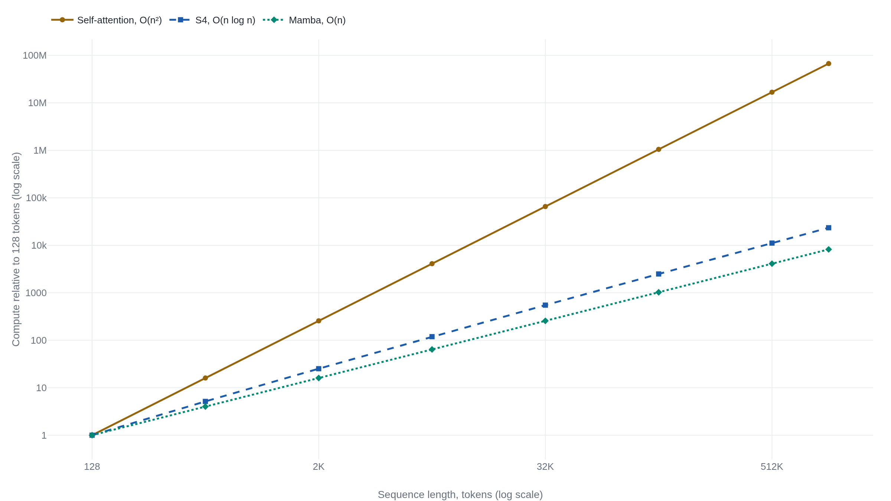

Attention alone outran recurrence, at a cost its own table had already recorded
The 2017 paper that proved recurrence and convolution were unnecessary for translation also logged the O(n²) cost that the state-space models of 2021 to 2024 built their case against.
Attention Is All You Need
Read the paperThe dominant sequence transduction models are based on complex recurrent or convolutional neural networks in an encoder-decoder configuration. The best performing models also connect the encoder and decoder through an attention mechanism. We propose a new simple network architecture, the Transformer, based solely on attention mechanisms, dispensing with recurrence and convolutions entirely. Experiments on two machine translation tasks show these models to be superior in quality while being more parallelizable and requiring significantly less time to train. Our model achieves 28.4 BLEU on the WMT 2014 English-to-German translation task, improving over the existing best results, including ensembles by over 2 BLEU. On the WMT 2014 English-to-French translation task, our model establishes a new single-model state-of-the-art BLEU score of 41.8 after training for 3.5 days on eight GPUs, a small fraction of the training costs of the best models from the literature. We show that the Transformer generalizes well to other tasks by applying it successfully to English constituency parsing both with large and limited training data.1
Before 2017, sequence transduction ran on two designs the Transformer replaced with one
Translating a sentence, or transducing any sequence into another one, meant choosing how a model would carry information from an input token to a distant output token. The two answers in use by 2017 were recurrence and convolution. Recurrence meant an RNN or LSTM reading the sentence one word at a time and passing a hidden state forward. Convolution meant a stack of local filters whose receptive field only grows by adding more layers. Both work. Both also force a specific kind of cost. A recurrent layer cannot compute the hidden state at position 10 before it has computed position 9. A convolutional stack needs depth proportional to the distance between two tokens it must relate.1
Vaswani et al. proposed dropping both and keeping only the piece the best recurrent models had already bolted on as a supplement: attention. Attention lets any output position look directly at any input position and weigh it by relevance, with no path length that grows with distance. The architecture built entirely from that one operation is the Transformer. Six encoder layers feed six decoder layers. Each encoder layer is a self-attention step followed by a feed-forward network. Each decoder layer is the same pair plus a second attention step that looks at the encoder's output. The decoder's self-attention is masked so that position t cannot look ahead to position t+1, which is what keeps training an autoregressive translator honest.1
Whether attention had to be the only way to build a sequence model, or was just the fastest one available in 2017, is the open question. The evidence is the paper's own numbers and the sequence models that later targeted the complexity table it published alongside them.
One score decides how much of each word to keep
Every attention layer runs the same operation at every output position. Turn that position's embedding into a query vector. Compare the query against a key vector standing in for every position it can see. Use the comparison to weigh how much of each position's value vector to mix into the output. The query, key, and value vectors are not raw embeddings. Each is the same input vector passed through its own learned projection matrix (WQ, WK, WV). The model chooses what to compare and what to retrieve, rather than comparing raw word vectors to each other.1
Take a three-word sentence reduced to two-dimensional keys and values so the arithmetic stays visible. Position 2's query is q2 = [0, 1]. The three keys are k1 = [1, 0], k2 = [0, 1], k3 = [1, −1], and the three values are v1 = [1, 0], v2 = [0, 2], v3 = [2, 1]. The raw scores are the dot products q2·k1 = 0, q2·k2 = 1, and q2·k3 = −1. Scaled by 1/√2 (the toy dk here is 2) and passed through softmax, those three numbers become weights of roughly 0.284, 0.576, and 0.140. Multiply each value by its weight and add: 0.284·v1 + 0.576·v2 + 0.140·v3 ≈ [0.56, 1.29]. That vector, not word 2's own embedding, is what the layer hands forward: mostly itself, with a little of word 1 mixed in and almost none of word 3.
Every query in the sequence runs that same three-step computation at once, which is scaled dot-product attention:
- QQueries: one row per output position, what it is looking for.
- K^{\top}Keys: one row per input position, what it offers to be compared against.
- \sqrt{d_k}The fix for a growth problem the next section derives.
- VValues: what actually gets mixed into the output, in the proportions softmax assigns.
What a 64-term dot product does to softmax
In the actual model, dk is not 2. The base configuration splits a 512-dimensional model across 8 attention heads, so each head's queries and keys are 64-dimensional.1 Run the same variance argument the paper uses. If the 64 components of q and k are each roughly independent with mean 0 and variance 1, their dot product q·k is a sum of 64 terms, each with variance 1. That sum has variance 64 and standard deviation 8. A typical raw score is not a small number near zero; it is off by several units of 8 in either direction before anything else happens.
Softmax exponentiates its inputs before normalizing them, so a gap of a few units of 8 between the largest score and the rest turns into a gap of e8-scale ratios after exponentiation. One key ends up capturing nearly all the weight. The rest collapse toward zero. The gradient shrinks toward zero right along with them, for every low-weight key and for the query and key vectors that produced those scores. The paper states the failure mode directly: “the dot products grow large in magnitude, pushing the softmax function into regions where it has extremely small gradients.”1 Dividing every score by √64 = 8 before the softmax rescales the dot product back to unit variance, the same regime the toy example above already used. The constant is not a tuning choice layered on top of the computation; it is sized exactly to cancel the variance growth that forming the dot product itself introduces.
Eight smaller comparisons instead of one big one
A single attention function over the full 512 dimensions would produce one weighting per query, averaged over everything that function's dot product happens to respond to. The paper instead projects Q, K, and V through eight different learned matrices. Each projection feeds its own scaled dot-product attention, run independently in a 64-dimensional subspace. The eight 64-dimensional outputs are concatenated back into 512 dimensions. One more learned projection, WO, then maps the result back to model space. In full: MultiHead(Q,K,V) = Concat(head1, …, head8)WO, where headi = Attention(QWiQ, KWiK, VWiV). The stated motivation is that this “allows the model to jointly attend to information from different representation subspaces at different positions,” something a single 512-dimensional dot product per query cannot separate out.1 The big model runs the same idea at 16 heads of 64 dimensions each, over a 1024-dimensional model.
The paper's own ablation prices the design choice rather than just asserting it. Collapsing eight heads into a single 512-dimensional head costs 0.9 BLEU against the base model on the English-to-German development set, a larger single-change penalty than almost anything else in the table. Going the other way, to 16 heads of 32 dimensions each, neither helps nor hurts: BLEU holds at the base model's 25.8 and perplexity ticks down slightly, from 4.92 to 4.91. Splitting the comparison into more, narrower subspaces is close to free once you have already split it once; not splitting it at all is not.1
| Variant | PPL (dev) | BLEU (dev) | What changed |
|---|---|---|---|
| base | 4.92 | 25.8 | 8 heads, dk = dv = 64 |
| 1 head | 5.29 | 24.9 | the multi-head split removed, one 512-dim head |
| 16 heads | 4.91 | 25.8 | more, narrower heads, dk = 32 |
| learned PE | 4.92 | 25.7 | sinusoidal positional encoding swapped for a learned one |
Attention has no notion of order until one gets added
Scaled dot-product attention, as built above, is a weighted average over a set of key-value pairs. Nothing about forming a score from q·k and mixing values by softmax weight refers to where in the sequence a key or value sits. Shuffle the input tokens and, absent any other signal, the multiset of pairs a fixed query attends over is identical. Its output is identical too: the computation rebuilt so far genuinely cannot tell first token from last.
The paper's fix is to add a position-dependent vector to each input embedding before anything else happens. That vector is built from sine and cosine at geometrically increasing wavelengths: PE(pos, 2i) = sin(pos/100002i/d) and PE(pos, 2i+1) = cos(pos/100002i/d). Here pos is the position, and 2i, 2i+1 index a pair of dimensions in the model.1
The ablation table shows the two barely differ: swapping in learned positional embeddings costs a rounding-error 0.1 BLEU (25.7 against 25.8) with identical perplexity. The paper keeps the sinusoidal version anyway: “we chose the sinusoidal version because it may allow the model to extrapolate to sequence lengths longer than the ones encountered during training.”1
What the ablation actually tests, in other words, is which scheme encodes position, not whether one is needed; the paper never trains a variant with no positional signal at all. Attention needs an explicit position vector bolted onto the input, because the score-and-average operation itself is order-blind by construction. A model built a different way does not necessarily share that requirement.
What training in parallel actually bought
The paper's own complexity table is where the trade gets made explicit. For a sequence of length n and model dimension d, self-attention costs O(n2·d) per layer, worse in n than a recurrent layer's O(n·d2). But the same table scores a second column: the number of operations that must happen in sequence rather than in parallel. Self-attention needs O(1) sequential steps per layer, because every output position's computation depends only on the layer's input, which is already fully known. A recurrent layer needs O(n) sequential steps, because position t's hidden state does not exist until position t−1's does. The same asymmetry shows up in maximum path length between any two positions. Self-attention connects every position directly to every other: O(1). Recurrence crosses one position at a time: O(n).1
That O(1) sequential-operations column is what a training run actually spends. The big model reached 41.8 BLEU, a new single-model state of the art, after 3.5 days of training on eight P100 GPUs.1 Its German result, 28.4 BLEU, beat the previous best, including ensembles, by more than 2 BLEU. A layer with no sequential dependency between output positions can use every GPU on every step; a layer that must finish position t before starting t+1 cannot.
That same O(1)-per-layer property is also why training parallelizes so well and why generation does not follow it for free. Training feeds the decoder its entire target sequence at once, masked so position t only sees positions before it, and every position's loss computes in parallel. Generating a translation from scratch cannot skip that dependency. Token t is not known until the model has already produced it, so decoding proceeds one token per step. At step t, the decoder attends back over all t previously generated tokens' cached keys and values. Summed over generating n tokens, that is 1 + 2 + … + n attention comparisons: the same O(n2) the complexity table already named for a layer processing the full sequence at once. Now it is paid out one token at a time. A key-value cache that grows linearly in n sits in memory the whole way through. The number the paper wrote down for a training-time layer cost is the same number that makes generation slower as sequences grow.
A model with no attention layer closes the gap
Four years on, Gu, Goel, and Ré's S4 targets exactly that number. A structured state-space model processes a sequence through a linear recurrence with a fixed-size hidden state, not a growing pairwise score matrix. Reformulated so the recurrence computes efficiently, it reaches O(n log n) complexity rather than O(n2). S4 becomes the first model to solve the 16,384-token Path-X task in the Long Range Arena benchmark, a length no Transformer variant tested there had solved. It posts state-of-the-art results across the rest of that suite too.2
By 2024, Gu and Dao's Mamba pushes the same line to fully linear complexity, O(n), using a selective scan that lets the state-space parameters themselves depend on the input rather than staying fixed. Mamba-3B matches the downstream performance of Transformers twice its parameter count, runs inference at five times the throughput, and the paper reports handling sequences up to a million tokens.3 Neither S4 nor Mamba contains an attention layer. Both are a direct empirical answer to a question the 2017 paper's own table raised and never resolved. A model can reach what the “all you need” architecture delivers, without attention at all. On long sequences and inference cost, it can exceed it.

The positional-encoding question resolves differently, too, and neither answer refutes the other. Attention needed the sinusoidal vector bolted on because scoring and averaging over a set carries no order by construction. A state-space model's recurrence is order by construction, the same way a plain RNN's is. Position moves through the hidden state as the recurrence unrolls, so Mamba adds no separate positional-encoding step.3 Each design solves the order problem in whatever way its own architecture demands. Whether a positional-encoding layer appears is a symptom of the underlying computation, not a point of comparison on its own.
Necessary for parallelism, not for sequence modeling
Split the 2017 claim into the two things it actually asserted, and the record treats them differently. That attention alone is sufficient for high-quality sequence transduction held up. The ablations above show why: the pieces built on top of it, the multi-head split, the positional signal, each earn a measurable share of the result, rather than riding along for free. The BLEU numbers were real, reproduced, state-of-the-art gains, not an artifact of the benchmark. That attention was the fastest sufficient design to train in 2017 also held up, for a specific, traceable reason. O(1) sequential operations per layer, against a recurrent network's O(n), is what let the big model reach a new state of the art in 3.5 days on eight GPUs.
What did not hold up is the exclusivity the title implies. “All you need” reads as a claim that no other design would do. S4 and Mamba are a direct counterexample. Sequence modeling does not require attention's pairwise score matrix at all. On the long-sequence, high-throughput-inference frontier, exactly where the O(n2) table entry was already conceding ground, a fixed-size-state alternative now wins outright.
The win is not universal, and the independent record says so. Sieber et al. compare attention, state-space, and recurrent architectures inside one unifying framework, with no stake in any of the three. Their target is not attention's training cost but its inference cost, the same quadratic bottleneck the reconstruction above derives from a growing key-value cache. They also test linear attention against Mamba's selective update term by term and find the two are not, in general, the same computation: attention's normalization step cancels in a way the state-space model's per-dimension discretization step does not. The two become equivalent only under specific conditions, not as a general rule, which keeps attention and state-space models two distinct design choices rather than one arithmetic wearing two names.4
Despite the S4 and Mamba results, two independent surveys, Wang et al.'s review of the state-space literature and Schneider's survey of what comes after Transformers, both describe state-space models as the leading challenger, not the incumbent's replacement.56 Most deployed language models still run on attention. Typical deployed context lengths, thousands to tens of thousands of tokens, keep the O(n2) term small enough to absorb.
The field's other response to the same table entry was not to replace attention but to patch it. Longformer, BigBird, and Linformer trade the full pairwise score matrix for local, random, or low-rank approximations, while keeping attention itself.7 Google's own review of that line frames it as extending Transformers to longer sequences, not abandoning the architecture.8
The paper earned its claim to sufficiency and, for 2017 hardware, to speed. It never earned the exclusivity its title implies, and it did not need to: its own complexity table already told a careful reader exactly where a cheaper alternative would have to attack. Weigh a specific use against a specific number. At the context lengths most deployed systems still run, O(n2) is a cost worth paying for attention's simplicity and its training-time parallelism. Past roughly the point where S4 solved Path-X, sixteen thousand tokens and climbing, the same table entry is the reason a fixed-size-state model is now the better bet.23
Sources
- arXiv · Vaswani, Shazeer, Parmar, Uszkoreit, Jones, Gomez, Kaiser, Polosukhin, "Attention Is All You Need" (arXiv:1706.03762, NeurIPS 2017)
- arXiv · Gu, Goel, Ré, "Efficiently Modeling Long Sequences with Structured State Spaces" (arXiv:2111.00396)
- arXiv · Gu, Dao, "Mamba: Linear-Time Sequence Modeling with Selective State Spaces" (arXiv:2312.00752)
- arXiv · Sieber, Amo Alonso, Didier, Zeilinger, Orvieto, "Understanding the differences in Foundation Models: Attention, State Space Models, and Recurrent Neural Networks" (arXiv:2405.15731, NeurIPS 2024)
- arXiv · Wang et al., "State Space Model for New-Generation Network Alternative to Transformers: A Survey" (arXiv:2404.09516)
- arXiv · Schneider, "What Comes After Transformers? A Selective Survey Connecting Ideas in Deep Learning" (arXiv:2408.00386, ICAART 2024)
- Medium · Raj, Boopathi, "Demystifying Sparse Attention: Longformer, BigBird, Reformer, and Linformer Explained"
- Google Research · "Constructing Transformers For Longer Sequences with Sparse Attention Methods"